Stitch
The stitch step of the pipeline uses the reference point clouds
(all tiles of ref_round/ref_channel) added to the Notebook during the find_spots step
to find the overlap between neighbouring tiles in the form of shifts. It then uses these shifts to get
the origin of each tile in a global coordinate system. The tile origins are
saved to the Notebook as nb.stitch.tile_origins and this is the only variable computed in
this section which is used later in the pipeline.
The stitch NotebookPage is added to the Notebook after this stage
is finished.
Shift
We need to find the overlap between each pair of neighbouring tiles. To do this, for each tile, we ask whether there is a tile to the north of it, and if there is we compute the shift between the two. We then ask if there is a tile to the east of it, and if there is we compute the shift between the two.
Example
For a \(2\times3\) (\(n_y \times n_x\)) grid of tiles, the indices are:
| 2 | 1 | 0 |
| 5 | 4 | 3 |
We consider each tile in turn:
- Tile 0 has no tiles to the north or east so we go to tile 1.
- Tile 1 has a tile to the east (0) so we find the shift between tile 1 and tile 0.
- Tile 2 has a tile to the east (1) so we find the shift between tile 2 and tile 1.
- Tile 3 has a tile to the north (0) so we find the shift between tile 3 and tile 0.
- Tile 4 has a tile to the north (1) so we find the shift between tile 4 and tile 1. Tile 4 also has a tile to the east (3) so we find the shift between tile 4 and tile 3.
- Tile 5 has a tile to the north (2) so we find the shift between tile 5 and tile 2. Tile 5 also has a tile to the east (4) so we find the shift between tile 5 and tile 4.
We will always be finding the offset of a tile relative to a tile with a smaller index.
The tile indices for neighbours for which we find the overlap in the north/south direction
are saved as nb.stitch.south_pairs. The shift between tile nb.stitch.south_pairs[i, 0]
and tile nb.stitch.south_pairs[i, 1] is saved as nb.stitch.south_shifts[i].
Initial range
We compute the shift through an exhaustive search in a given range. The initial range used for a tile to the north
can be specified through config['stitch']['shift_south_min'] and config['stitch']['shift_south_max'].
The range used for a tile to the east
can be specified through config['stitch']['shift_west_min'] and config['stitch']['shift_west_max'].
Confusion between north/south and east/west
For finding the shift to a tile in the north, the parameters used in the config file and saved to the
NotebookPage have the south prefix. This is because if tile B is to the north of tile A, the shift applied
to tile A to get the correct overlap is to the south (i.e. negative in the y direction).
Equally, for finding the shift to a tile in the east, the parameters used in the config file and saved to the
NotebookPage have the west prefix. This is because if tile B is to the east of tile A, the shift applied
to tile A to get the correct overlap is to the west (i.e. negative in the x direction).
The range in the \(i\) direction will then be between shift_min[i] and shift_max[i] with a spacing of
config['stitch']['shift_step'][i].
If these are left blank, the range will be computed automatically using config['stitch']['expected_overlap']
and config['stitch']['auto_n_shifts'].
Example automatic range calculation
For an experiment with
nb.basic_info.tile_sz = 2048config['stitch']['expected_overlap'] = 0.1config['stitch']['auto_n_shifts'] = 20, 20, 1config['stitch']['shift_step'] = 5, 5, 3
the range used for a tile to the north is computed as follows:
import numpy as np
expected_overlap = config['stitch']['expected_overlap']
auto_n_shifts = config['stitch']['auto_n_shifts']
shift_step = config['stitch']['shift_step']
expected_shift = np.array([-(1 - expected_overlap]) * [tile_sz, 0, 0]).astype(int)
print(f"Expected shift = {expected_shift}")
range_extent = auto_n_shifts * shift_step
print(f"YXZ range extent: {range_extent}")
range_min = expected_shift - range_extent
range_max = expected_shift + range_extent
print(f"YXZ range min: {range_min}")
print(f"YXZ range max: {range_max}")
shifts_y = np.arange(range_min[0], range_max[0] + shift_step[0]/2, shift_step[0])
print(f"Y exhaustive search shifts:\n{shifts_y}")
shifts_x = np.arange(range_min[1], range_max[1] + shift_step[1]/2, shift_step[1])
print(f"X exhaustive search shifts:\n{shifts_x}")
shifts_z = np.arange(range_min[2], range_max[2] + shift_step[2]/2, shift_step[2])
print(f"Z exhaustive search shifts:\n{shifts_z}")
Expected shift = [-1843 0 0]
YXZ range extent: [100 100 3]
YXZ range min: [-1943 -100 -3]
YXZ range max: [-1743 100 3]
Y exhaustive search shifts:
[-1943 -1938 -1933 -1928 -1923 -1918 -1913 -1908 -1903 -1898 -1893 -1888
-1883 -1878 -1873 -1868 -1863 -1858 -1853 -1848 -1843 -1838 -1833 -1828
-1823 -1818 -1813 -1808 -1803 -1798 -1793 -1788 -1783 -1778 -1773 -1768
-1763 -1758 -1753 -1748 -1743]
X exhaustive search shifts:
[-100 -95 -90 -85 -80 -75 -70 -65 -60 -55 -50 -45 -40 -35
-30 -25 -20 -15 -10 -5 0 5 10 15 20 25 30 35
40 45 50 55 60 65 70 75 80 85 90 95 100]
Z exhaustive search shifts:
[-3 0 3]
For a tile to the east, the calculation is exactly the same except
expected shift = [0 -1843 0].
The range used for north/south overlap is saved as nb.stitch.south_start_shift_search.
Obtaining best shift
Here is some pseudocode for how we obtain the best shift between tile 5 and tile 4 from an exhaustive search. The comments (#) give the shape of the indicated array.
function find_neighbour_distances(yxz_0, yxz_1):
# yxz_0: [n_spots_0 x 3]
# yxz_1: [n_spots_1 x 3]
For i in range(n_spots_0):
find nearest spot in yxz_1 to yxz_0[i] to be the one at index j.
distances[i] = distance between yxz_0[i] and yxz_1[j].
return distances # [n_spots_0]
function get_score(distances, dist_thresh):
# distances: [n_spots]
This is a function that basically counts the number of values in
distances which are below dist_thresh.
I.e. the more close neighbours, the better the shift and thus the
score should be larger.
The function used in the pipeline returns the float given by:
score = sum(exp(-distances ** 2 / (2 * dist_thresh ** 2)))
If all values in distances where 0 (perfect), score = n_spots.
If all values in distances where infinity or much larger than
dist_thresh (bad), score = 0.
# tile_5_yxz: [n_spots_t5 x 3]
# tile_4_yxz: [n_spots_t4 x 3]
# exhaustive_search: [n_shifts x 3]
for shift in exhaustive_search:
tile_5_yxz_shifted = tile_5_yxz + shift # [n_spots_t5 x 3]
distances = find_neighbour_distances(tile_5_yxz_shifted,
tile_4_yxz) # [n_spots_t5]
score = get_score(distances, dist_thresh) # float
best_shift is the shift with the best score
score
In the score function, the dist_thresh parameter
thus specifies the distance below which neighbours are a good match. It is specified through
config['stitch']['neighb_dist_thresh'].
The score computed with this function is approximately the number of neighbouring points between
the two point clouds with a distance between them less than config['stitch']['neighb_dist_thresh'].
3D
For speed, rather than considering an exhaustive search in three dimensions, we first ignore any shift in \(z\) and just find the best \(yx\) shift.
To do this, we split
each 3D point cloud into a number of 2D point clouds.
The number is determined by config['stitch']['nz_collapse'] to be:
ceil(nb.basic_info.nz / config['stitch']['nz_collapse'])
We then consider the corresponding point clouds independently.
Pseudocode - \(yx\) shift
Lets consider finding the best yx shift between tile 5 and tile 4 with:
nb.basic_info.nz = 50config['stitch']['nz_collapse'] = 30config['stitch']['neighb_dist_thresh'] = 2
The pseudocode is:
# tile_5_yxz: [n_spots_t5 x 3]
# tile_4_yxz: [n_spots_t4 x 3]
# exhaustive_search_yx: [n_shifts_yx x 2]
n_2d_point_clouds = ceil(50 / 30) = 2 so we need 2 2D point clouds
split tile_5_yxz into tile_5A_yx and tile_5B_yx:
- tile_5A_yx are the yx coordinates of every spot in
tile_5_yxz with z coordinate between 0 and 24 inclusive.
# [n_spots_t5A x 2]
- tile_5B_yx are the yx coordinates of every spot in
tile_5_yxz with z coordinate between 25 and 49 inclusive.
# [n_spots_t5B x 2]
split tile_4_yxz into tile_4A_yx and tile_4B_yx:
- tile_4A_yx are the yx coordinates of every spot in
tile_4_yxz with z coordinate between 0 and 24 inclusive.
# [n_spots_t4A x 2]
- tile_4B_yx are the yx coordinates of every spot in
tile_4_yxz with z coordinate between 25 and 49 inclusive.
# [n_spots_t4B x 2]
for shift_yx in exhaustive_search_yx:
tile_5A_yx_shifted = tile_5A_yx + shift_yx # [n_spots_t5A x 2]
distancesA = find_neighbour_distances(tile_5A_yx_shifted,
tile_4A_yx) # [n_spots_t5A]
scoreA = get_score(distancesA, 2) # float
tile_5B_yx_shifted = tile_5B_yx + shift_yx # [n_spots_t5B x 2]
distances = find_neighbour_distances(tile_5B_yx_shifted,
tile_4B_yx) # [n_spots_t5B]
scoreB = get_score(distancesB, 2) # float
score = scoreA + scoreB
best_shift_yx is the shift_yx with the best score
Once the best \(yx\) shift is found (and after any necessary widening of the range), the shift in \(z\) is found by using the full 3D point clouds again but doing just an exhaustive search in \(z\).
Before this is done, it is important that the \(z\) coordinate of the point clouds is in the same unit
as the \(yx\) coordinate so distances are computed correctly.
The conversion from \(z\) pixel units to \(yx\) pixel units is achieved by multiplying
the \(z\) coordinate by nbp_basic.pixel_size_z / nbp_basic.pixel_size_xy. The \(z\) shifts in the
exhaustive search must also be put into \(yx\) pixel units.
Pseudocode - \(z\) shift
If the previous example found the best \(yx\) shift to be best_shift_yx,
the pseudocode below is what follows
this to find the best \(yxz\) shift.
# tile_5_yxz: [n_spots_t5 x 3]
# tile_4_yxz: [n_spots_t4 x 3]
# exhaustive_search_z: [n_shifts_z]
# best_shift_yx: [2]
shift_yxz = [0, 0, 0]
The yx shift is constant in this search, always set to the best
yx shift we found in the 2D search.
shift_yxz[0] = best_shift_yx[0]
shift_yxz[1] = best_shift_yx[1]
for shift_z in exhaustive_search_z:
shift_yxz[2] = shift_z
tile_5_yxz_shifted = tile_5_yxz + shift_yxz # [n_spots_t5 x 3]
distances = find_neighbour_distances(tile_5_yxz_shifted,
tile_4_yxz) # [n_spots_t5]
score = get_score(distances, 2) # float
best_shift is the shift with the best score
Score Threshold
Once we have found the best shift in the exhaustive search and its score, we need to determine if the score is large enough for us to accept the shift or if we should widen the range.
We accept the shift if the score is above a score_thresh. This can either be specified through
config['stitch']['shift_score_thresh'] or if this is left empty, it is
computed for each shift.
This computation is done after we have found
the best \(yx\) shift to be best_shift_yx, as explained by the following pseudocode (also shown
with view_stitch_search):
# exhaustive_search_yx: [n_shifts_yx x 2]
# best_shift_yx: [2]
shifts_yx_use = all shifts between min_dist and max_dist from
best_shift_yx in exhaustive_search_yx # [n_shifts_use x 2]
shift_yx_thresh = shift in shifts_yx_use with the max score.
score_thresh = the score corresponding to shift_yx_thresh
multiplied by thresh_multiplier.
Where various parameters are specified through the configuration file:
min_dist:config['stitch']['shift_score_thresh_min_dist']max_dist:config['stitch']['shift_score_thresh_max_dist']thresh_multiplier:config['stitch']['shift_score_thresh_multiplier']
view_stitch_search
A good debugging tool to visualise how the best shift was computed is
view_stitch_search.
In 2D, it shows the score for all \(yx\) shifts in the exhaustive search:
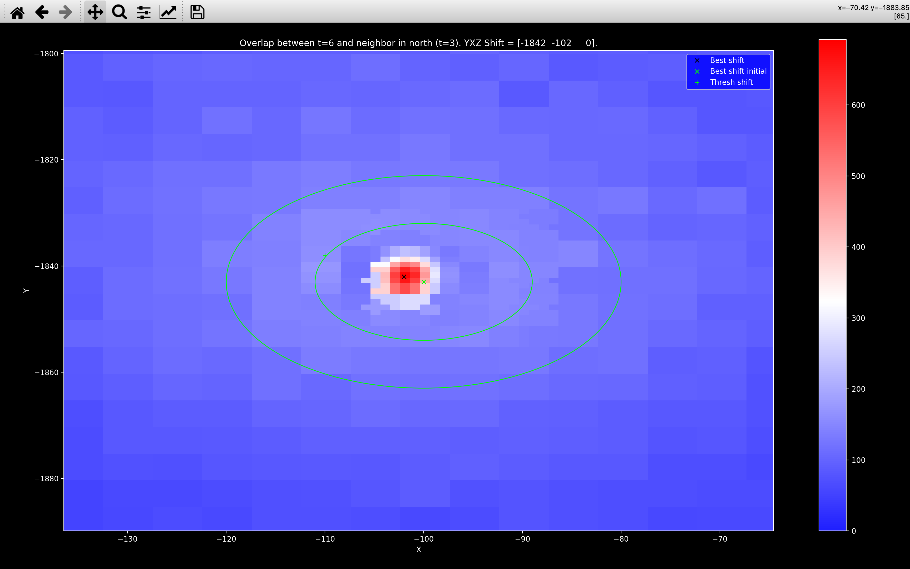
White in the colorbar refers to the value of score_thresh. The green x indicates
the shift that was found after the initial exhaustive search. The black x indicates
the final shift found after the refined search.
This plot is also useful for understanding the score_thresh computation.
The green + indicates the shift_yx_thresh,
the shift with the largest score between the two green circles.
The inner circle has a radius of config['stitch']['shift_score_thresh_min_dist'] and
is centered on the green x. The outer circle has a radius of
config['stitch']['shift_score_thresh_max_dist'] and is centered on the green x.
score_thresh is then set to config['stitch']['shift_score_thresh_multiplier']
multiplied by the score at the green +. In this case, this multiplier is 2 and thus the
score at the green + appears blue (score at the green + is approximately 150
and so score_thresh and the white in the image is about 300).
We use this method of determining score_thresh because the most striking feature of the plot
is the sharp gradient near the global maxima in score. Requiring
the score for an acceptable shift to be much larger than the max nearby score is
just saying we require a large gradient.
score_thresh in 3D
For the 3D pipeline, the score_thresh is computed in exactly the same way
to determine if the initial \(yx\) shift found is acceptable or the \(yx\) range needs
widening:
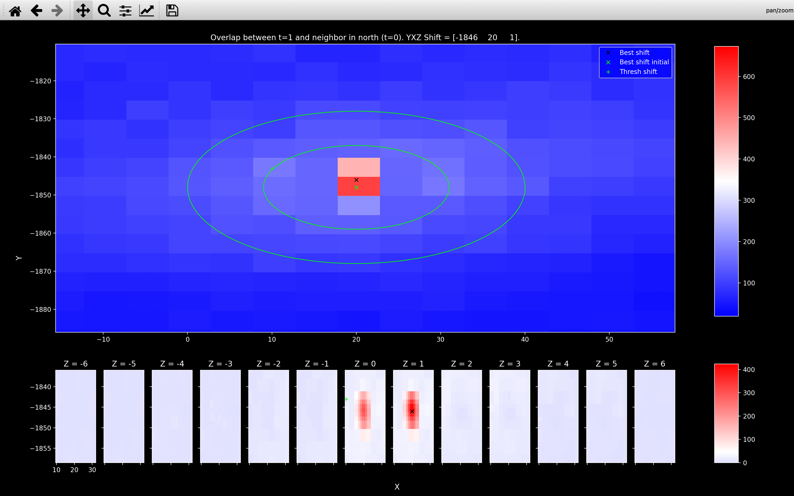
Once an acceptable \(yx\) shift has been found, we set score_thresh for the 3D search
to the max score at the \(yx\) shift used to find score_thresh in 2D across all z planes searched, multiplied
by config['stitch']['shift_score_thresh_multiplier'].
I.e. the green + in the Z=0 plot is at the same \(yx\) coordinate as the green + in the 2D plot.
The maximum score at this \(yx\) coordinate across z-shifts between -6 and 6 occurs at Z=0.
Thus, we set the score_thresh to be equal to the score at this \(yxz\) shift multiplied by
config['stitch']['shift_score_thresh_multiplier'].
The score_thresh is smaller when looking for the \(yxz\) shift because
we expect in 3D, if neighbouring points are on slightly different z-planes but
very close in \(yx\) they would have a small contribution to the score.
This is because the \(z\) pixels are larger than the \(yx\) pixels.
In 2D, a pair such as this would give a large contribution to the score
because only the \(yx\) distance would matter.
See the example in the refined search section to see how a shift of 1 in \(z\) can almost double the score.
Widening range
If the best shift found has score < score_thresh, then exhaustive search will continue
until either a shift with score > score_thresh is found or the search range exceeds a max_range:
while best_score < score_thresh:
extend exhaustive search
if range of exhaustive search > max_range in all dimensions:
Return current best_shift and best_score.
else:
Find best_shift and corresponding best_score in new larger
exhaustive_search.
The max_range in the \(y\), \(x\), \(z\) direction is set to be config['stitch']['shift_max_range'].
The exhaustive search is extended
using config['stitch']['shift_widen']. The possible shifts in dimension \(i\) are extended
by config['stitch']['shift_widen'][i] values either side of the current min/max values of the
shifts while maintaining the same spacing.
Example exhaustive search extension
Lets consider a single dimension with initial an initial exhaustive search containing the following shifts:
array([-10, -5, 0, 5, 10])
With shift_widen = 10 in this dimension, the updated exhaustive search would
contain the following shifts:
array([-60, -55, -50, -45, -40, -35, -30, -25, -20, -15, -10, -5, 0,
5, 10, 15, 20, 25, 30, 35, 40, 45, 50, 55, 60])
This new search has a range of 120 so if max_range in this dimension was 100,
the updated exhaustive search would not take place.
An example in 2D where the widening worked successfully is shown below using view_stitch_search:
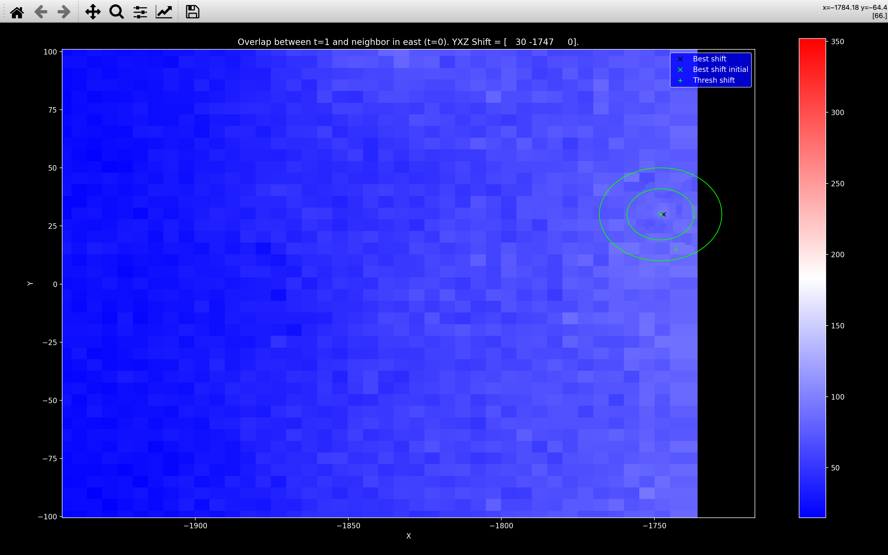
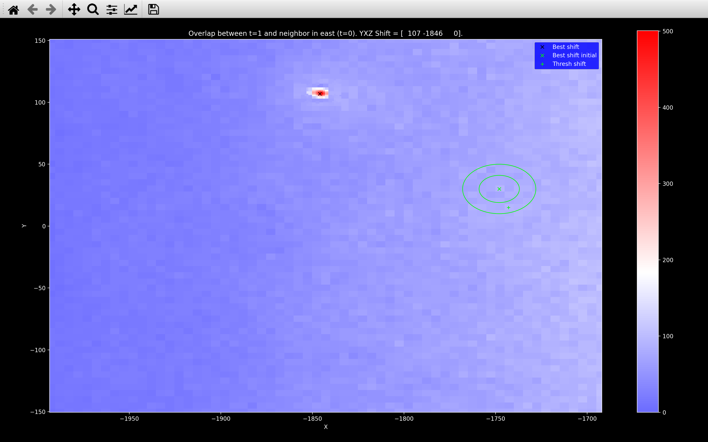
Here we see that before widening the search range, the maximum score is barely distinguishable from
the rest and thus falls below score_thresh.
After widening though, we uncover a shift with a score far exceeding score_thresh.
3D
In 3D, we do the \(yx\) search first and then widen according to
config['stitch']['shift_widen'][:2] and config['stitch']['shift_max_range'][:2]
to find the best \(yx\) shift.
Then we do the \(z\) search keeping the \(yx\) shift equal to the best \(yx\) shift and
widen according to config['stitch']['shift_widen'][2] and config['stitch']['shift_max_range'][2].
This gives us the best \(yxz\) shift.
The example below shows a case where widening was required in \(z\) but not in \(yx\):
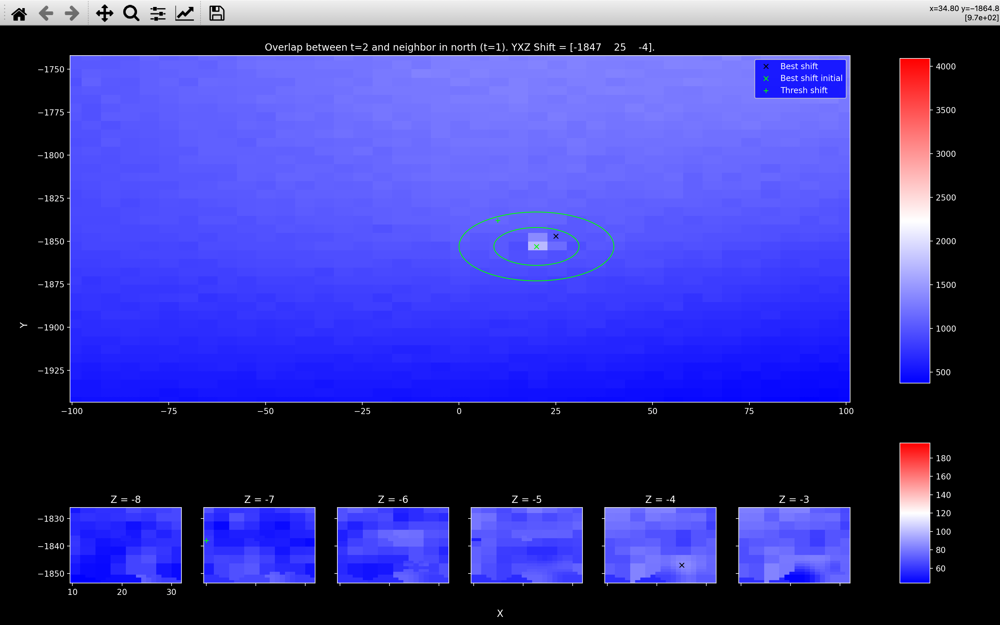
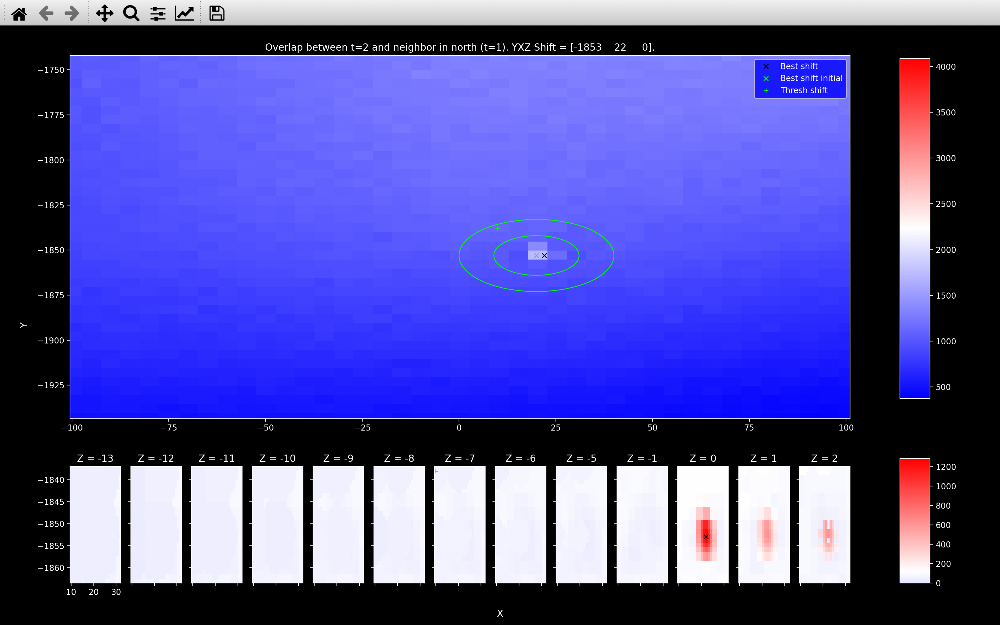
Refined search
After we have found the best \(yxz\) shift from the exhaustive search, we find the final shift by looking in the neighbourhood of this shift with a smaller spacing. Initially, we halve the spacing, then we reduce the spacing to 1.
Example
Lets consider a 3D example where an exhaustive search with \(yxz\) spacing [5, 5, 3]
found the best \(yxz\) shift to be [-1848, 20, 0] with a score of 247.7.
The refined search range in this neighbourhood with half the step size is set to:
Y shifts: [-1858 -1855 -1852 -1849 -1846 -1843 -1840 -1837]
X shifts: [10 13 16 19 22 25 28 31]
Z shifts: [-6 -4 -2 0 2 4 6]
This search finds the best \(yxz\) shift to be [-1846, 19, 0] with a score of 298.3.
The final search with a spacing of 1 is set to:
Y shifts: [-1849 -1848 -1847 -1846 -1845 -1844 -1843]
X shifts: [16 17 18 19 20 21 22]
Z shifts: [-2 -1 0 1 2]
This search finds the best \(yxz\) shift to be [-1846, 20, 1] with a score of 423.8.
This is why the view_stitch_search
plot shows more detail near the black x and why the black x is in a
different location from the green x even when no widening is required.
Updating initial range
We assume that all tiles overlapping in the same direction should have approximately the same
shift between them. So, after we have found at least 3 shifts in a given direction
which have score > score_thresh, we update
our initial exhaustive search range to save time for future tiles.
Example
The code below shows how update_shifts
works to refine the initial search
range, given that the following \(yxz\) shifts have been found for north/south overlapping tiles
(all with score > score_thresh):
[-1846, 20, 1][-1853, 22, 0][-1854, 20, 0]
import numpy as np
from coppafish.stitch.shift import update_shifts
y_shifts_found = [-1846, -1853, -1854]
x_shifts_found = [20, 22, 0]
z_shifts_found = [1, 0, 0]
step = [5, 5, 3]
y_search = np.arange(-1943, -1743+step[0], step[0])
x_search = np.arange(-100, 100+step[1], step[1])
z_search = np.arange(-3, 3 + step[2], step[2])
# y
print(f"Initial y search:\n{y_search}")
y_search_new = update_shifts(y_search, y_shifts_found)
print(f"Updated y search:\n{y_search_new}")
# x
print(f"Initial x search:\n{x_search}")
x_search_new = update_shifts(x_search, x_shifts_found)
print(f"Updated x search:\n{x_search_new}")
# z
print(f"Initial z search:\n{z_search}")
z_search_new = update_shifts(z_search, z_shifts_found)
print(f"Updated z search:\n{z_search_new}")
# Number of shifts to search
print(f"Initial number of shifts in search: "
f"{y_search.size * x_search.size * z_search.size}")
print(f"Updated number of shifts in search: "
f"{y_search_new.size * x_search_new.size * z_search_new.size}")
Initial y search:
[-1943 -1938 -1933 -1928 -1923 -1918 -1913 -1908 -1903 -1898 -1893 -1888
-1883 -1878 -1873 -1868 -1863 -1858 -1853 -1848 -1843 -1838 -1833 -1828
-1823 -1818 -1813 -1808 -1803 -1798 -1793 -1788 -1783 -1778 -1773 -1768
-1763 -1758 -1753 -1748 -1743]
Updated y search:
[-1861 -1856 -1851 -1846 -1841]
Initial x search:
[-100 -95 -90 -85 -80 -75 -70 -65 -60 -55 -50 -45 -40 -35
-30 -25 -20 -15 -10 -5 0 5 10 15 20 25 30 35
40 45 50 55 60 65 70 75 80 85 90 95 100]
Updated x search:
[-1 4 9 14 19 24 29]
Initial z search:
[-3 0 3]
Updated z search:
[-3 0 3]
Initial number of shifts in search: 5043
Updated number of shifts in search: 105
Amend low score shifts
After all the shifts between neighbouring tiles have been found, the ones with score < score_thresh are
amended.
If for a particular pair of overlapping tiles in the north/south direction,
the best shift found had a score < score_thresh,
the shift and score are saved in the notebook in nb.stitch.south_outlier_shifts and
nb.stitch.south_outlier_score respectively.
The shift is then re-computed using a new initial exhaustive search range
(saved as nb.stitch.south_final_shift_search). This range is computed using the
update_shifts function to centre
it on all the shifts found in the south direction for which score > score_thresh.
For this re-computation, no widening is allowed either. The idea behind this
is that it will force the shift to be within the range we expect based on the successful shifts.
I.e. a shift with a slightly lower score but with a shift
more similar to the successful shifts is probably more reliable than a shift with
a slightly higher score but with a shift significantly different from the successful ones.
The new shift and score will be saved in nb.stitch.south_shifts and
nb.stitch.south_score respectively.
Global coordinates
After finding the overlap for the set of neighbouring tile pairs (\(\mathcal{R}\)), we are left with a shift vector \(\pmb{\Delta}_{T_1, T_2}\) for every pair of neighbouring tiles \(T_1\) and \(T_2\), that specifies the \(yxz\) offsets of tile \(T_2\) relative to tile \(T_1\).
We define a single global coordinate system by finding the coordinate origin \(\pmb{\mathrm{X}}_T\) (bottom left corner) for each tile \(T\). Note however that this problem is overdetermined as there are more neighbor pairs than there are tiles. We therefore compute the offsets by minimizing the loss function:
Differentiating this loss function with respect to \(\pmb{\mathrm{X}}_T\) yields a set of simultaneous linear equations, whose solution yields the origins of each tile on the reference round/channel.
This procedure is done with the get_tile_origin function, with
the tile origins saved to the Notebook as nb.stitch.tile_origin.
Error - too many bad shifts
After the call reference spots step,
check_shifts_stitch
will be run.
This will produce a warning for any shift found with score < score_thresh.
An error will be raised if the fraction of shifts with score < score_thresh exceeds
config['stitch']['n_shifts_error_fraction'].
If this error does occur, it is probably worth looking at the Viewer
and the debugging plots to see if the stitching
looks good enough to continue with the rest of the pipeline or if it should be re-run with different configuration
file parameters (e.g. smaller config['stitch']['shift_step'] or larger config['stitch']['shift_max_range']).
Saving stitched images
After
the tile_origin has been computed and the stitch NotebookPage has been added to the Notebook,
a stitched image of the ref_round/ref_channel will be saved
to the output_dir as a npz file with the file name nb.file_names.big_anchor_image.
To save memory, the stitched reference image will be saved as int16 after rescaling to fill the range. We do this because the image is useful for plotting, but we do not care much about the actual pixel values.
DAPI
If dapi_channel is specified, a stitched image of the
anchor_round/dapi_channel will be saved
to the output_dir as a npz file with the file name nb.file_names.big_dapi_image.
If DAPI tophat filtering was specified, the filtered images
save to tile_dir will be loaded in and stitched together. Otherwise, the raw data will be
loading in from the input_dir and stitched together with no filtering.
I.e. from_raw == True insave_stitched.
The stitched DAPI image will be saved as uint16 with no rescaling.
Also, to save memory, all pixels with absolute value less than config['stitch']['save_image_zero_thresh']
will have their pixel value set to \(0\) before saving.
Debugging
There are a few functions using matplotlib which may help to debug this section of the pipeline.
view_stitch_shift_info
The view_stitch_shift_info function
plots the shifts found for all neighbouring tiles in a given direction on the same plot
(there are 3 plots for each direction).
This allows you to see if they are similar, as we expect or if there are some outliers.
It also includes a plot of score vs score_thresh for each pair of neighbouring tiles:
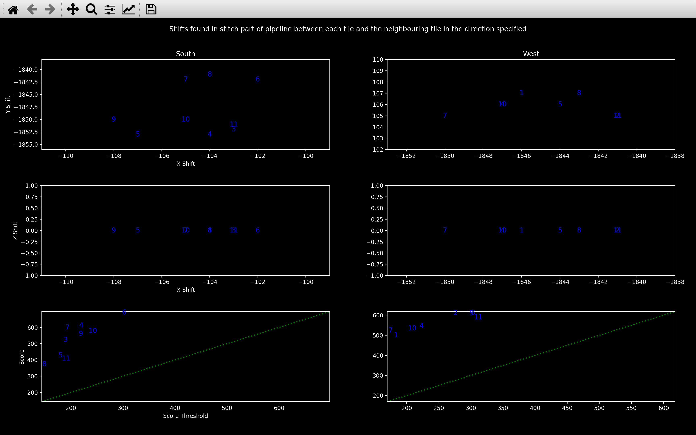
In this case, all the shifts seem reasonable as the top two plots show quite a small range,
and the bottom plot shows score > score_thresh for every shift (blue numbers are all above the green line).
If a shift had score < score_thresh, it would be shown in red in each of the three plots
for that direction.
The numbers refer to the tile with a neighbouring tile to either the north or east of it. This example is for a \(4\) (\(n_y\)) \(\times\) \(3\) (\(n_x\)) grid of tiles, so the number \(1\) in the West column of plots refers to the shift found between tile \(1\) and tile \(0\). The number \(3\) in the South column of plots refers to the shift found between tile \(3\) and tile \(0\).
This function can also be used to view nb.stitch.outlier_shifts by running
view_stitch_shift_info(nb, True).
view_stitch_overlap
For an experiment with tile \(0\) to the north of tile \(1\),
view_stitch_overlap(nb, 1, 'north')
will always show the global coordinates of the point cloud for tile \(0\) in red
(global_yxz = local_yxz + nb.stitch.tile_origin[0]).
There are then buttons to select which point cloud for tile \(1\) is plotted in blue:
- No overlap: This is assuming there is \(0\%\) overlap between the two tiles.
- \(x\%\) overlap: \(x\) here will be
config['stitch']['expected_overlap']. This is our starting guess, i.e. the expected overlap in \(y\) and a shift of 0 in \(x\) and \(z\). - Shift: This is the best shift found, saved in
nb.stitch.south_shifts. - Final: This is the coordinates of tile \(1\) spots in the global coordinate system
(
local_yxz + nb.stitch.tile_origin[1]).
An example is shown below:
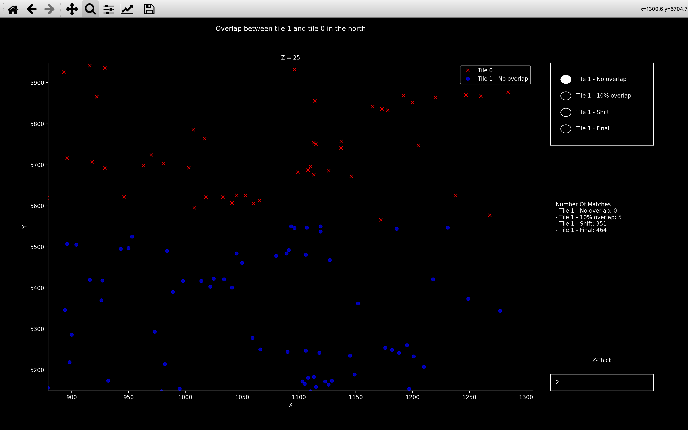
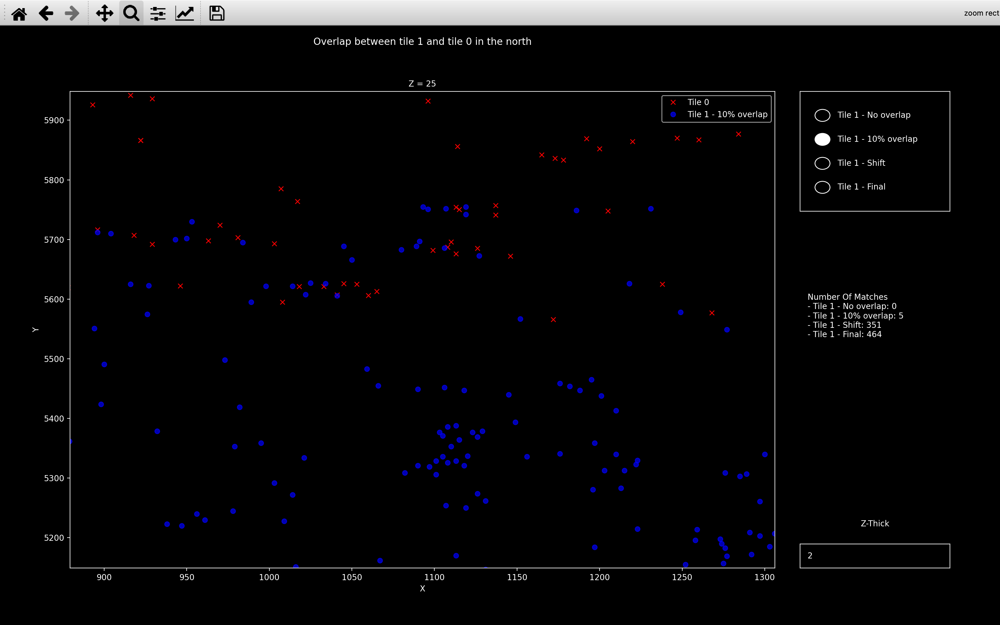
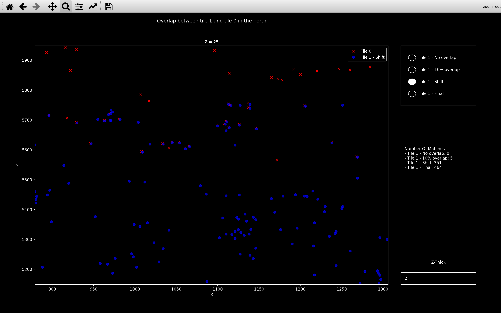
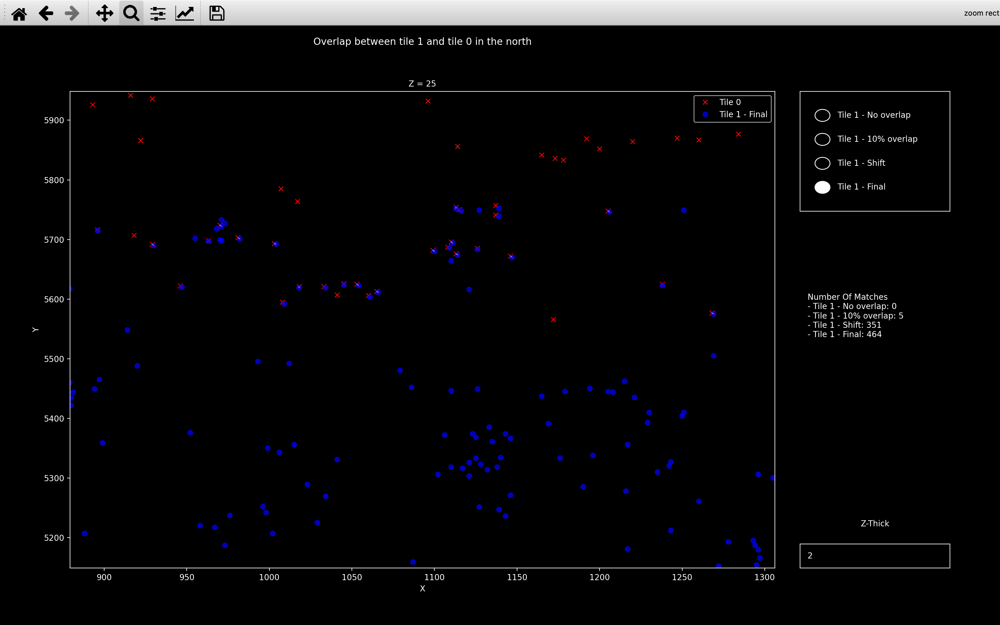
The z-plane is changed by scrolling with the mouse. You can change the value of z-thick in the bottom right. Spots detected on the current z-plane and this many z-planes either side of it will be shown.
The white lines (only really visible in the Final plot) indicate neighbouring points with
a distance between them of less than or equal to config['stitch']['neighb_dist_thresh'].
The number of matches listed on the right is then the number of these white lines (across all z-planes),
this will be similar to the score.
view_stitch
Another useful function is view_stitch.
This plots all the spots found in the ref_round/ref_channel in the global coordinate system specified
by nb.stitch.tile_origin.
The example below is for a \(4\times3\) grid of tiles in 2D.
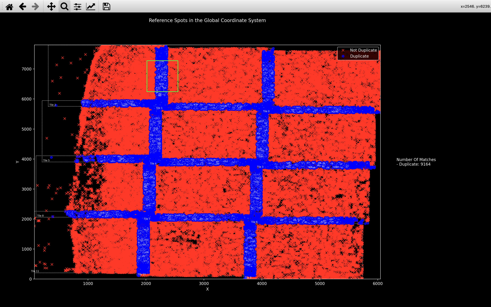
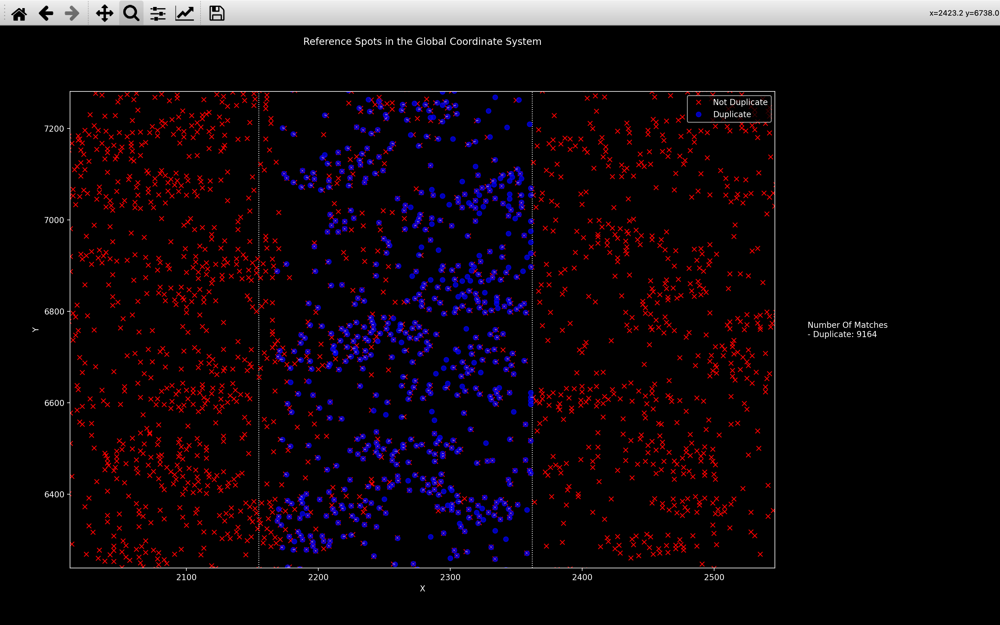
The blue spots are duplicate spots (detected on a tile which is not the tile whose centre they are closest to). For each duplicate spot, we expect there is a non-duplicate spot in red, detected on a different tile but with the same global coordinate. We can see this in the Zoom plot, showing the intersection between tile 1 and tile 2 (indicated by a green box in the Full image).
These duplicate spots will be removed in the get reference spots step of the pipeline, so we don't double count the same spot.
The white lines and number of matches are the same as for view_stitch_overlap.
Also in 3D, you can scroll between z-planes with the mouse and specify z-thick in the same way.
Pseudocode
This is the pseudocode outlining the basics of this step of the pipeline. For more detailed pseudocode about how the best shift is found, see the shift section.
r_ref = reference round
c_ref = reference round
spot_yxz[t, r, c] = yxz coordinates for spots detected on tile t,
round r, channel c.
for t in use_tiles:
if tile to north of t:
Find best_shift between spot_yxz[t, r_ref, c_ref] and
spot_yxz[t_north, r_ref, c_ref].
If 3 or more north/south shifts with score > score_thresh:
Update search range around these shifts.
if tile to east of t:
Find best_shift between spot_yxz[t, r_ref, c_ref] and
spot_yxz[t_east, r_ref, c_ref].
If 3 or more east/west shifts with score > score_thresh:
Update search range around these shifts.
Amend shifts with score < score_thresh using new search range for
each direction.
Find tile_origin specifying global coordinate system.
Add tile_origin and debugging info to stitch NotebookPage.
Add stitch NotebookPage to Notebook.
Use tile_origin to save stitched ref_channel (and DAPI) image to
output directory.